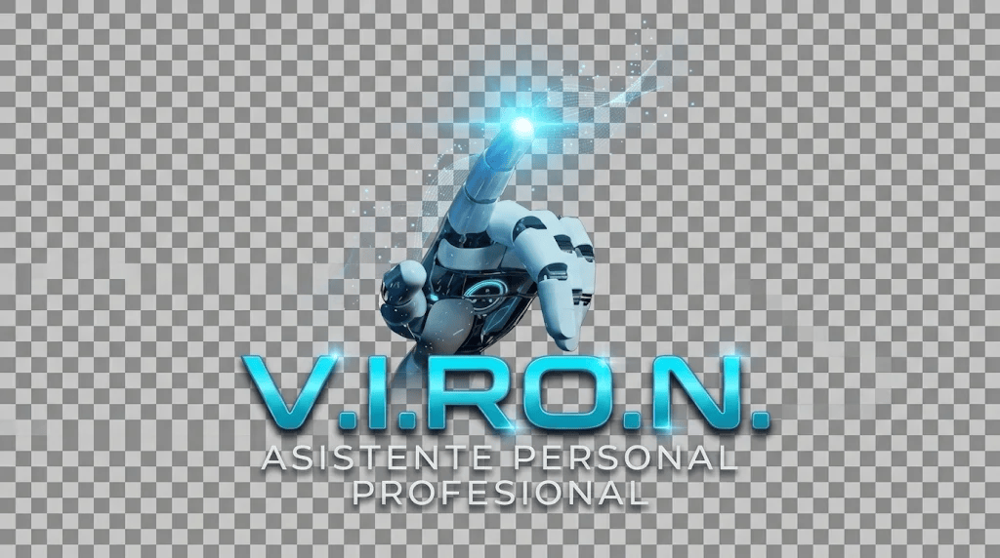

PRÓXIMA ACCIÓN
01 // TAREA
NEURAL COMMAND INTERFACE
◈
ANALIZANDO…
◈
◉ PENSAMIENTO
◉ MEMORIA
◉ HERRAMIENTAS
V.I.R.O.N. PERSONAL OS
LISTO PARA AYUDAR VOZ · ORGANIZACIÓN · INFORMACIÓN
ESTADO
OPERATIVO
▰ ▰ ▰ ▰ ▰
Sin recordatorios
AGENTE WINDOWS
02 // ENLACEMEMORIA
03 // DATOSÓRDENES Y PENDIENTES
0 / 0Sin tareas activas, señor.
TUS APLICACIONES
SISTEMA DE VOZ
Micrófono activado
V.I.R.O.N. te escucha…
RUTINAS RÁPIDAS
ASISTENCIA INCLUSIVA
Diseñado para todas las edades.